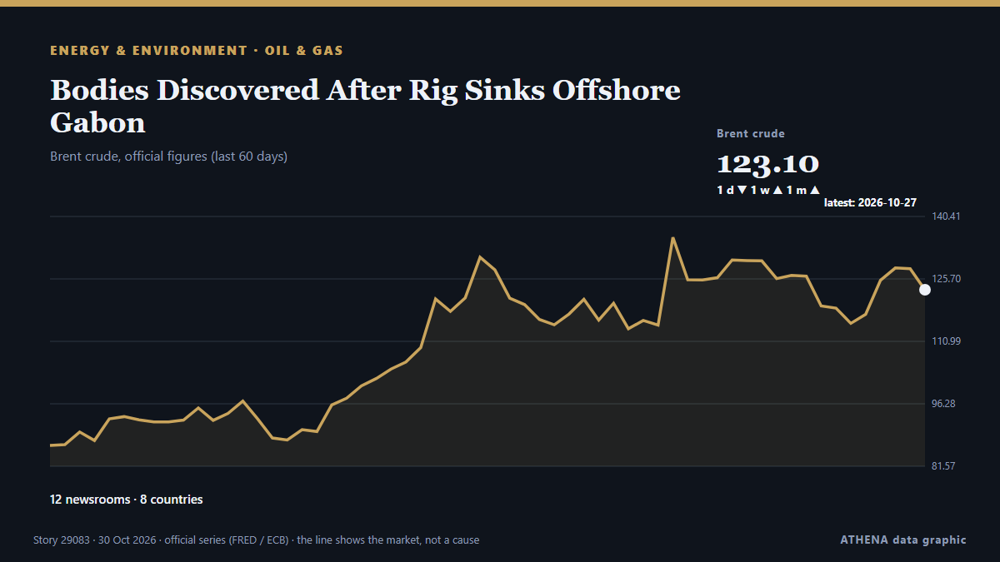

Bodies Discovered After Rig Sinks Offshore Gabon

'An underwater remotely operated vehicle has located the bodies of three individuals', Borr Drilling revealed. de Rigzone
Informado de forma independiente por 12 medios de 8 países desde el 25 oct; el primero fue Offshore Energy; la cobertura va perdiendo fuerza. ATHENA califica el riesgo como elevado (5.2/10), sobre todo por la gravedad del daño descrito y la calidad de las pruebas. La confianza es del 90 % (alta): lo corroboran 12 medios independientes, con una fiabilidad media de las fuentes del 77 %. Medios por país: Estados Unidos (4), Países Bajos (3), Sudáfrica (3). Cobertura: del 25 oct al 30 oct, 126 horas.
Por qué importa: Los hechos de energía y recursos afectan a los precios del combustible y la electricidad, la seguridad de suministro y los compromisos climáticos.
Qué ha cambiado: 5 informaciones nuevas de 5 redacciones en las 24 horas hasta el 30 oct.
Primer titular: Borr Drilling Rig Sinks Off Gabon, One Person Dead And Four Missing
Los titulares se muestran en inglés, tal como se publicaron.
De un vistazo
Seleccionado, puntuado y redactado por la metodología publicada de ATHENA. Ningún editor interviene en eventos concretos. Cómo se elabora ›
| 25 Oct 07:49 UTC | 3 |
|---|---|
| 25 Oct 13:49 UTC | 1 |
| 25 Oct 19:49 UTC | 1 |
| 26 Oct 01:49 UTC | 2 |
| 26 Oct 07:49 UTC | 1 |
| 26 Oct 13:49 UTC | 0 |
| 26 Oct 19:49 UTC | 0 |
| 27 Oct 01:49 UTC | 1 |
| 27 Oct 07:49 UTC | 2 |
| 27 Oct 13:49 UTC | 1 |
| 27 Oct 19:49 UTC | 0 |
| 28 Oct 01:49 UTC | 0 |
| 28 Oct 07:49 UTC | 0 |
| 28 Oct 13:49 UTC | 0 |
| 28 Oct 19:49 UTC | 0 |
| 29 Oct 01:49 UTC | 0 |
| 29 Oct 07:49 UTC | 0 |
| 29 Oct 13:49 UTC | 4 |
| 29 Oct 19:49 UTC | 0 |
| 30 Oct 01:49 UTC | 0 |
| 30 Oct 07:49 UTC | 0 |
| 30 Oct 13:49 UTC | 1 |
| 25 Oct 09:14 UTC | 0.0 |
|---|---|
| 25 Oct 13:07 UTC | 2.7 |
| 25 Oct 16:18 UTC | 4.7 |
| 26 Oct 07:08 UTC | 4.1 |
| 29 Oct 16:19 UTC | 5.5 |
| 30 Oct 13:50 UTC | 5.2 |
Por qué estas cifras
Importancia
Riesgo
Confianza
La cobertura: quién informó y cuándo
titular tal como se publicó · abre el original- Offshore Energy · Países BajosRig incident: 110 rescued, 5 still missing after Borr Drilling’s jack-up sinks off Gabon coast
- The Straits Times · SingapurBorr Drilling rig sinks off Gabon, one person dead and four missing
- The Rio Times · BrasilGabon Oil Rig Sinks, 5 Workers Missing
- gCaptain · Estados UnidosBorr Drilling Rig Sinks Off Gabon, One Person Dead And Four Missing
- The Maritime Executive · Estados UnidosBorr Drilling Jackup Loses Stability and Sinks off Gabon
- SABC News · SudáfricaBorr Drilling rig sinks off Gabon, one person dead and four missing
- IOL · SudáfricaFive missing after oil rig sinks off Gabon
- Offshore Energy · Países BajosRig sinking incident: Search continues for five missing as 'robust' probe looms
- Al Jazeera English · CatarPeople missing after massive drilling platform sinks off Gabon
- The Independent · Reino UnidoMoment huge oil rig sinks into the ocean as search for survivors continues
- Rigzone · Estados UnidosRig Sinks Offshore Gabon
- News of Bahrain · BaréinIndian Worker Dies as Oil Rig Sinks Off Gabon
- IOL · SudáfricaGabon oil rig disaster: Three bodies found in sunken platform
- Offshore Energy · Países BajosFatal rig incident: Search still underway for two missing workers off Gabon
- Africanews (English) · AFRGabon oil rig disaster: Three bodies found, two still missing
- The Independent · Reino UnidoThree bodies found after massive drilling rig sank off coast of Gabon
- Rigzone · Estados UnidosBodies Discovered After Rig Sinks Offshore Gabon